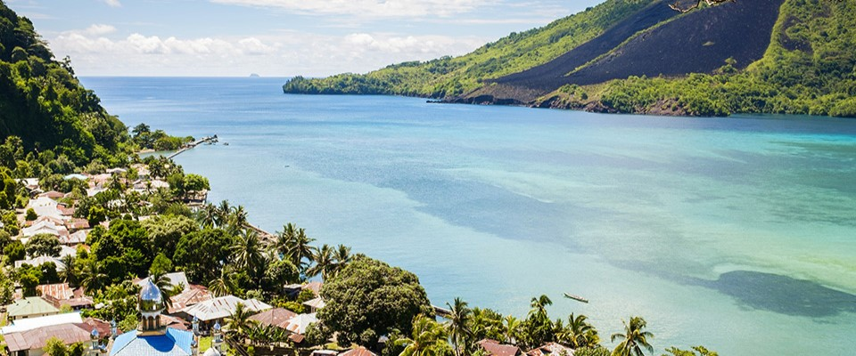
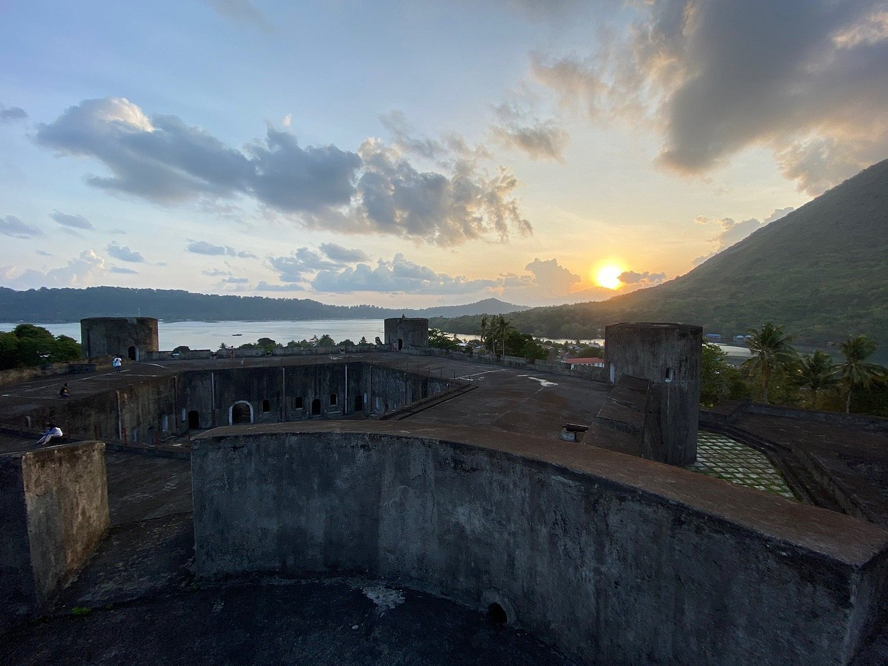
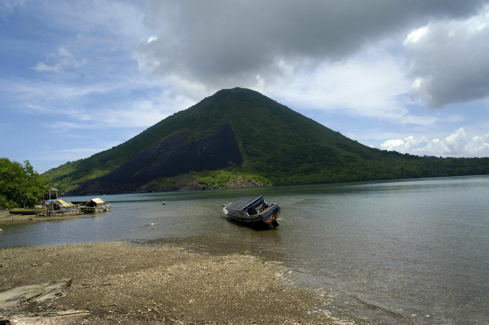
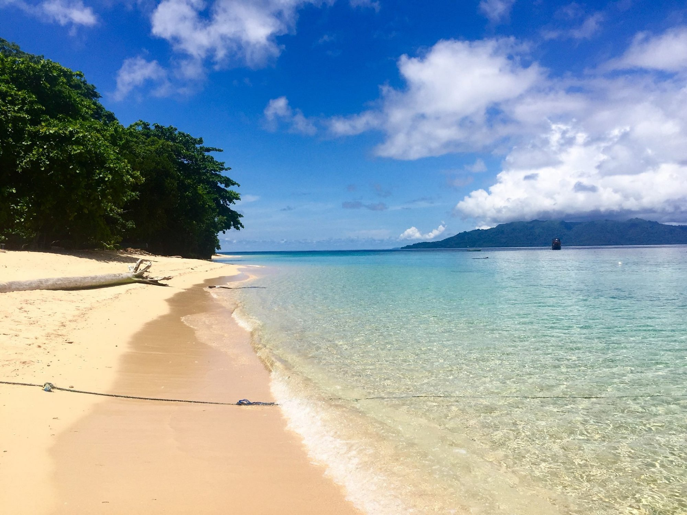

Explore the Hidden Gems of
Banda Neira
Why Visit Banda Neira?
Banda Neira, nestled in the Banda Islands of Indonesia, beckons with a captivating blend of rich history and stunning natural beauty. Steeped in colonial-era significance, the island's well-preserved architecture, including the imposing Fort Belgica, offers a captivating journey into its spice trade past. Amidst the charming streets, visitors can step back in time, immersing themselves in the island's bygone eras. Beyond history, Banda Neira's turquoise waters and vibrant coral reefs make it a paradise for snorkeling and diving, while lush green hills and picturesque beaches provide a serene backdrop for relaxation. The warmth of the local community ensures an immersive and unforgettable experience, making Banda Neira an ideal destination for those seeking a unique and enriching travel adventure.
Popular Destinations in Banda Neira
Below are some of the most visited destinations in Banda Neira.

read more
Fort Belgica
Discover the allure of Fort Belgica, an enchanting 17th-century Dutch fortress nestled on the picturesque Banda Neira island in Indonesia, offering a journey through time and spice trade history in an unparalleled setting.read more

read more
Banda Api Mountain
Embark on a transformative adventure to Banda Api Mountain, where the vibrant colors, unique flora, awe-inspiring volcanic landscapes, and the thrill of standing atop the summit offer an unforgettable experience that will leave you in awe of the Earth's natural beauty and power.read more

read more
Hatta Beach
Immerse yourself in the tranquil beauty of Hatta Beach, where the stunning combination of serene waters and picturesque landscapes promises a rejuvenating escape like no other.read more
Ready to Visit Banda Neira?
Click the button to find out more information on how to get to Banda Neira.